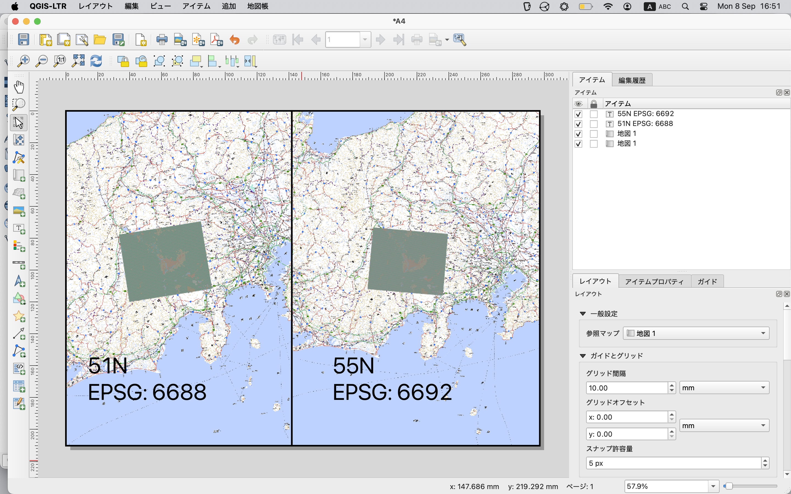

4. 投影法の操作
座標参照系（CRS）は、数値座標を地球の表面上の位置に関連付ける方法です。
QGIS では、それぞれに異なる使用例や長所・短所がある約 7,000 の標準 CRS に対応しています！
QGIS プロジェクトやデータに対して適切な参照系を選択するのは複雑な作業になることがありますが、幸いなことに QGIS ではこの選択の手引きとなり、さまざまな CRS をできるだけ透過的かつ正確に使用できるようにしています。
QGIS では約 7,000 の既知の CRS をサポートしています。
これらの標準CRSは、欧州石油探査グループ（European Petroleum Search Group：EPSG）およびフランス国土地理院（Institut Geographique National de France：IGNF）によって定義されたものに基づいており、基礎となる「Proj」投影ライブラリを通じてQGISで利用できます。
公式の QGIS ユーザーマニュアルにある通り、一般的な WGS84緯度経度 CRS は EPSG:4326 です。
日本でよく使われる JGD2011 の地理座標 (緯度経度) は、回転楕円体 GRS80 を採用しており、EPSG:6668 （JGD2000はEPSG: 4612）です。
Web マッピング 標準 CRS (Web メルカトル) は EPSG:3857 です。
Web メルカトル の特徴として、計算の高速化を図るために、回転楕円体ではなく真球を採用しています。
計算は早いのですが、極に近づくほどに実際よりもずれてきます。
平面直角座標系は、「平成 14 年国土交通省告示第 9 号」で定義され、日本を19の系（ローマ数字を使いIからXIXまで）に分けて定義しています。おおむね複数の府県で一つの系となっています。ただし、東京都、北海道、沖縄県は広範囲なため、複数の系に渡っています。また鹿児島県もI系とII系に分かれています。平面直角座標系は、単位がメートルなので、距離を測る時などに使います。
このほか、ユニバーサル横メルカトル図法 (UTM) がありますが、これは表示や地図作成する際の座標系で、GIS データでUTMを使うことは珍しいようです。
シェープファイルの場合、.prj に空間座標系が保存されています。このファイルはテキストエディタ (サクラエディタなど) で中身を確認することができます。.prj ファイルがない場合は、QGIS で追加する際に指定します。
Table 4.1 覚えておくべきEPSG
地理座標系 |
投影座標系 |
|---|
EPSG:6668 |
JGD2011 |
EPSG:6677 |
JGD2011 IX系 (関東) |
EPSG:4612 |
JGD2000 |
EPSG:2451 |
JGD2000 IX系 (関東) |
EPSG:3857 |
Web メルカトール |
EPSG:4326 |
GPS |
この他、地図の投影法には以下のようなものがあり、QGISで描くことができる。
ランベルト正角円錐 Lambert Conformal Conic 角度 (形) が正確
正距方位 Azimuthal Equidistant 中心からの距離と方位が正確
ランベルト正積円筒 Lambert cylindrical equal-area 面積が正確
モルワイデ Mollweide 面積が正確
プロジェクトの CRS を変更するには、ステータスバーの一番右にある EPSG:3857 などとなっているところをクリックする。
新たに CRS を作りたい場合は、メニューの「設定」（macOSの場合、QGIS から Preferences）から、ユーザ定義CRSを選択する。
東京 (北緯35.7度、東経139.8度とする) を中心とした正距方位:
+proj=aeqd +lat_0=35.7 +lon_0=139.8 +x_0=0 +y_0=0 +ellps=WGS84 +units=m +no_defs
この後、ステータスバーのEPSGから今作成したCRSを選択する。
GIS データは、地理座標系 (緯度経度) で作成されていることが多いです。
日本でよく使われる JGD2011 の地理座標 (緯度経度) は、回転楕円体 GRS80 を採用しており、EPSG:6668 （JGD2000はEPSG: 4612）です。
国土数値情報は、ESPG:6668 または EPSG:4612 で提供されています。
一方、国勢調査は、地理座標系と平面直角座標系で提供されています。
平面座標系は、単位がメートルなので、距離を測る時などに使います。
平面直角座標系の詳細は、https://www.gsi.go.jp/sokuchikijun/jpc.html を参照してください。
東京都は、基本的に IX (9) 系を使っていますが、島嶼部は他の系を使っています。
八丈島などの伊豆諸島は、同じく IX (9) 系を使っています。
小笠原諸島は、XIX (14) 系を使っています。
ところが、国勢調査のデータでは、東京都の八丈町も小笠原村も IX (9) 系で提供されています。
鹿児島県は I (1) 系と II (2) 系に分かれていますが、国勢調査のデータでは、鹿児島県全域が I (1) 系で提供されています。
沖縄も同様に、沖縄本島は XIX (19) 系、宮古島は VIII (8) 系、石垣島は VII (7) 系ですが、国勢調査のデータでは、沖縄県全域が XIX (19) 系で提供されています。
上は要確認。
Table 4.2 国土地理院で刊行している地図（抜粋）
1:2,500 国土基本図 |
横メルカトル図法平面直角座標系 |
1:25,000 地形図 |
ユニバーサル横メルカトル図法［ガウス・クリューゲル図法ＵＴＭ座標系］(UTM) |
1:200,000 地勢図 |
ユニバーサル横メルカトル図法［ガウス・クリューゲル図法ＵＴＭ座標系］(UTM) または多面体図法（一部） |
1:1,000,000 国際図 |
正角割円錐図法（2標準緯線） |
地理院地図（旧電子国土ポータル） |
Web Mercator 投影法（WGS84/GRS80の長半径を半径とした真球をメルカトル投影したもの） |
Source: https://www.gsi.go.jp/kohokocho/FAQ3.html
UTM 座標系は、世界を 60 のゾーンに分けており、日本の大部分は 52 ～ 54 のゾーンに入っています。
例えば、北海道の大部分から静岡県までは 54N となっています。
53N は、愛知県から広島県くらいまでの範囲です。
日本の GIS データで、データの CRS が UTM になっていることはあまりないようです。
ただし、QGIS 上で表示したり、印刷する際には、UTM 座標系を使うことがあります。
この場合、プロジェクトの CRS を UTM に設定します。
QGIS で UTM 座標系を使う場合、データの CRS が異なっていても、QGIS が自動的に変換してくれます。
UTM 座標系は、メッシュデータを表示すると、その違いがよくわかります。
例えば、東京のメッシュデータを、東京より東の 55N と、沖縄の西側を含む 51N で表示してみると、メッシュの形が異なって表示されます。
以下は、同じマップから、印刷レイアウトでマップを二つ並べました。左の投影系を UTM 51N、右を UTM 55N にしています。

新たに CRS を作りたい場合は、メニューの「設定」（macOSの場合、QGIS から Preferences）から、ユーザ定義 CRS を選択します。
このとき、検索しやすい名前をつけましょう。
東京 (北緯35.7度、東経139.8度とする) を中心とした正距方位:
+proj=aeqd +lat_0=35.7 +lon_0=139.8 +x_0=0 +y_0=0 +ellps=WGS84 +units=m +no_defs
プロジェクトの CRS を変更するには、ステータスバーの一番右にある EPSG:3857 などとなっているところをクリックします。
Tokyo (139.839478,35.652832) とLondon (-0.118092,51.509865) の距離を計測してみましょう。
Table 4.3 図法ごとの距離計測
EPSG |
距離マトリックス |
距離 (楕円体) |
距離 (デカルト座標) |
|---|
3857 |
9590825.444330223 |
9561580.593 |
15718379.864 |
4612 |
9590825.444393389 |
|
|
6668 |
9590825.444393389 |
|
|
東京を中心とした正距方位 |
9590825.444393389 |
9588102.428 |
9934986.467 |